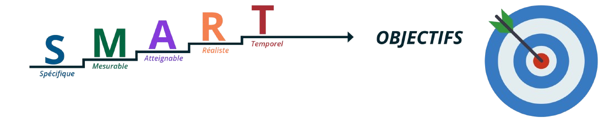

Se Fixer des Objectifs : Clé de la Réussite Personnelle et Professionnelle
Introduction
Se fixer des objectifs est une pratique essentielle pour réussir, tant sur le plan personnel que professionnel. Les objectifs fournissent une direction claire, motivent les individus et permettent de mesurer les progrès réalisés. Dans cet article, nous aborderons l'importance de se fixer des objectifs, de respecter les délais, de trouver des solutions créatives et d'échanger avec ses pairs pour améliorer constamment ses méthodes.
Importance de Se Fixer des Objectifs
Les objectifs servent de boussole, orientant nos efforts vers des résultats concrets et mesurables. Ils permettent de clarifier nos intentions, de concentrer notre énergie et de donner un sens à nos actions. Que ce soit pour terminer un projet, apprendre une nouvelle compétence ou améliorer une performance, se fixer des objectifs est crucial pour atteindre des résultats significatifs.
Respecter les Délais
Respecter les délais est tout aussi important que se fixer des objectifs. La gestion du temps est une compétence essentielle qui influence directement la productivité et la qualité du travail. Pour respecter les délais, il est crucial de :
- Planifier soigneusement ses tâches.
- Utiliser des outils de gestion du temps et des projets.
- Prioriser les tâches importantes et urgentes.
- Faire preuve de discipline et de concentration.
En respectant les délais, on renforce sa crédibilité et on optimise l'efficacité de ses efforts.
Trouver des Solutions Créatives
La capacité à trouver des solutions créatives est essentielle pour surmonter les obstacles et atteindre ses objectifs. Cela implique :
- Adopter une approche flexible et ouverte d'esprit.
- Explorer diverses options et alternatives.
- Ne pas avoir peur de prendre des risques calculés.
- Faire preuve de persévérance face aux défis.
En étant créatif, on peut trouver des solutions innovantes et efficaces qui permettent de progresser rapidement.
Échanger avec ses Pairs
L'échange avec ses pairs est un moyen puissant d'enrichir ses compétences et d'améliorer ses méthodes. Les avantages de ces échanges incluent :
- Obtenir des perspectives différentes et des idées nouvelles.
- Partager des expériences et des meilleures pratiques.
- Recevoir des conseils et des feedbacks constructifs.
- Développer un réseau de soutien professionnel.
Les interactions régulières avec ses pairs permettent d'élargir ses connaissances et d'optimiser ses approches pour atteindre ses objectifs.
Conclusion
Se fixer des objectifs, respecter les délais, trouver des solutions créatives et échanger avec ses pairs sont des pratiques essentielles pour réussir. En intégrant ces éléments dans sa routine, on maximise ses chances de réussite et on améliore constamment ses compétences et ses méthodes de travail. La combinaison de ces pratiques permet non seulement d'atteindre des résultats concrets, mais aussi de se développer personnellement et professionnellement de manière continue.